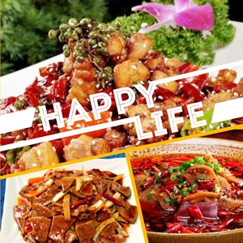
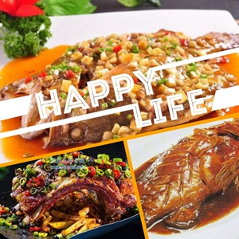
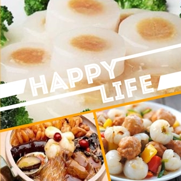

了解八大菜系
川菜
川菜即四川菜肴，是中国特色传统的四大菜系之一、 中国八大菜系之一、中华料理集大成者。
川菜取材广泛，调味多变，菜式多样，口味清鲜醇浓，善用麻辣调味， 有着别具一格的烹调方法和浓郁的地方风味， 融汇了各方的特点，博采众家之长，善吸收，善创新，享誉中外。 四川省会成都市被联合国教科文组织授予“世界美食之都”的荣誉称号。
徽菜
徽菜，是中国八大菜系之一，起源于徽州府城歙县（古徽州）。
安徽省宣城市绩溪县被授予中国徽菜之乡称号，每年均举办国际徽菜饮食文化节。 徽菜特色，是徽菜以烹制山野海味而闻名，而且选料朴实，味道醇厚，保持原汁原味。 徽菜的烹调方法常用烧、焖、炖。经典名菜有符离集烧鸡、雪冬烧山鸡、奶汁肥王鱼等等。
鲁菜

鲁菜，是历史最悠久、技法最丰富、难度最高、最见功力的菜系，是八大菜系之首。 风味特色：咸鲜为主、火候精湛、精于制汤、善烹海味、注重礼仪。
鲁菜的特点是清香、鲜嫩、味纯，十分讲究清汤和奶汤的调制，清汤色清而鲜，奶汤色白而醇。 经典名菜有糖醋黄河鲤鱼、清汤燕窝等等。
闽菜
闽菜是中国八大菜系之一，历经中原汉族文化和闽越族文化的混合而形成。 闽菜以烹制山珍海味著称，在色香味形俱佳基础上，尤以“香”、“味”见长， 其清鲜、和醇、荤香、不腻的风格特色和 汤路广泛的特点，在烹坛园地中独具一席。
闽菜的特点是以海味为主要原料，制作细巧、色调美观，以“糟”味最具特色。 最早起源于福建省闽候县。经典名菜有东坡肉、西湖醋鱼、太极明虾、龙井虾仁、叫花鸡等等。
苏菜

江苏菜，中国传统八大菜系之一，简称苏菜。 苏菜擅长炖、焖、蒸、炒，重视调汤，保持菜的原汁，风味清鲜，浓而不腻，淡而不薄， 酥松脱骨而不失其形，滑嫩爽脆而不失其味。
苏菜的特点是浓中带淡，口味偏甜而且刀工精细、玲珑细巧，汤浓而不腻，口味平和，咸中带甜。 烹调时用料严谨，讲究造型。苏菜的经典菜有清炖蟹粉、狮子头、鸡汤煮干丝等等。
湘菜

湘菜，即湖南菜，在长沙地区又被称为本味菜，是中国历史悠久的八大菜系之一。 湘菜制作精细，用料上比较广泛，口味多变，品种繁多；色泽上油重色浓，讲求实惠； 品味上注重香辣、香鲜、软嫩；制法上以煨、炖、腊、蒸、炒诸法见称。
湘菜特点是用料广泛，香鲜酸辣，而且多以辣椒、熏腊为原料烹饪。 经典名菜包括东安子鸡、麻辣子鸡、汤泡肚、冰糖湘莲等等。
粤菜

粤菜即广东菜，是中国传统四大菜系、八大菜系之一，源自中原，经历了两千多年的发展历程后， 到了晚清时期已渐成熟 。广州菜是粤菜的代表， 民间有 “食在广州”的美誉，顺德更被联合国教科文组织授予世界“美食之都”称号。
粤菜特色是口味讲究鲜嫩滑爽，夏秋清淡，冬春浓醇，调味爱用蚝油、虾酱和鱼露等增加鲜味， 颇具特色。菜的原料较广，花色繁多，并且善于变化。经典名菜包括三蛇龙虎凤大会、盐焗鸡、冬瓜盅等。
浙菜

浙江菜，简称浙菜，是中国汉族八大菜系之一。 浙江省位于我国东海之滨，北部水道成网，素有鱼米之乡之称。 其地山清水秀，物产丰富佳肴美，故谚曰:"上有天堂，下有苏杭"。
浙菜的特点是特点是鲜美脆嫩。而且浙江盛产鱼虾，又风景优美，所以这里的食物以鲜美著名。 著名菜肴有叫化童鸡、清汤鱼圆等等。